No resources match that search.

Tumeryk
Cloud security testing and attack simulation platform. Test cloud infrastructure for security vulnerabilities through automated attacks and provide AI-powered recommendations.

Lakera Guard
Real-time LLM security platform detecting prompt injection, jailbreak attempts, and unsafe behavior with <50ms latency. Detection models are trained on the vendor's own corpus of attack data.
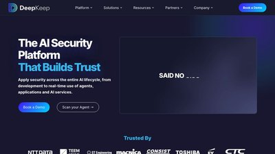
DeepKeep
Commercial AI security platform spanning the model and agent lifecycle: supply-chain scanning of model artifacts, a runtime firewall for prompt injection and data leakage, adaptive red teaming, and shadow AI discovery.

NVIDIA Garak
Open-source LLM vulnerability scanner probing for hallucination, data leakage, prompt injection, toxicity, and jailbreaks. The nmap of AI security.

LLM Guard
Open-source security toolkit with advanced input/output scanners for data leakage prevention, prompt injection detection, and content moderation. 2.5M+ downloads.

Rebuff AI
Multi-layered prompt injection detection using heuristics, LLM-based detection, and canary tokens to identify and mitigate vulnerabilities.

CalypsoAI Moderator
Model-agnostic enterprise LLM security solution providing real-time scanning, alerts, and comprehensive risk identification at scale.

NeMo Guardrails
NVIDIA's Python toolkit for adding programmable guardrails to LLM conversational applications, ensuring responsible and ethical AI use.

Guardrails AI
Python package for specifying structure, type validation, and correcting LLM outputs with pre-built measures for various risks.

Giskard AI Security
Automated LLM security testing with heuristics-based and LLM-assisted detectors for domain-specific vulnerabilities in AI applications.

LLMFuzzer
Open-source fuzzing framework for LLMs focusing on API integrations with diverse fuzzing strategies to identify vulnerabilities.

Pynt LLM Security
Dynamic analysis and traffic inspection for LLM APIs, identifying prompt injection pathways and insecure output handling.

BurpGPT
Burp Suite extension integrating LLMs for AI-enhanced web security testing with vulnerability scanning and traffic analysis.

Lasso Security
End-to-end LLM security solution protecting against external threats and internal vulnerabilities with comprehensive threat modeling.

WhyLabs LLM Security
Multi-layered approach to LLM security with data loss prevention, prompt injection monitoring, and misinformation detection.

Protecto AI
High-precision LLM security evaluation with Privacy Vault for data encryption, anonymization, and secure model deployment.

Vigil
Alpha-stage prompt-level security scanner for high-volume environments requiring prompt validation without infrastructure overhaul.

OpenAI Aardvark
Agentic security researcher monitoring commits for vulnerabilities using LLM-powered reasoning to identify, explain, and fix security issues.

Microsoft PyRIT
Python Risk Identification Toolkit for red-teaming LLMs with structured approaches to adversarial testing.

Constitutional AI
Anthropic's framework for AI safety through constitutional principles, enabling models to self-correct and maintain alignment.

Alert AI Gateway
Zero-Trust AI Security Gateway with automatic vulnerability scanning across full development lifecycle.

DeepEval
LLM evaluation and guardrails framework with LLM-as-judge for data leakage, prompt injection, jailbreaking, bias, and toxicity detection.

Nexos.ai Platform
Unified AI governance platform with AI Gateway, AI Workspace, guardrails, and LLM observability for enterprise security.

Granica AI Crunch
AI data platform optimizing training data pipelines with security, privacy, and compliance controls for LLM development.

Mindgard AI
AI security posture management (AI-SPM) for continuous threat monitoring, risk scoring, and automated remediation.

DeepStrike AI Pentesting
AI-specific penetration testing services simulating adversarial attacks, model inversion, and memory poisoning.

Hugging Face Model Cards
Standardized model documentation framework for transparency, security evaluation, and risk assessment of AI models.

OWASP Top 10 for LLMs 2025
Definitive list of top 10 LLM security vulnerabilities including prompt injection, data poisoning, and excessive agency. Updated for 2025 with new threats.

OWASP Agentic AI Top 10 2026
Groundbreaking framework for autonomous AI systems released at Black Hat Europe 2025, covering agentic manipulation and tool poisoning.

Prompt Injection Guide
Comprehensive OWASP guide to prompt injection vulnerabilities, direct and indirect attacks, and mitigation strategies ranked #1 AI security risk.

CSA Guardrails Guide
Cloud Security Alliance's in-depth guide on building enterprise AI prompt guardrails with DLP integration, multilayered security, and compliance frameworks.

Bypassing LLM Guardrails Research
Academic research demonstrating character injection and AML evasion attacks achieving 100% bypass rates against commercial guardrails.

Wiz Research Blog
Wiz Research posts covering cloud security incidents, vulnerability analysis, and threat research write-ups.

LLM Security Guide
Comprehensive GitHub reference for securing LLMs covering OWASP Top 10, prompt injection, adversarial attacks, and mitigation strategies.

Datadog Guardrails Best Practices
Technical guide on implementing guardrails for LLM security covering input validation, prompt construction, and output filtering.

Lakera Prompt Injection Guide
Tactical guide to understanding, recognizing, and preventing prompt injection attacks with real-world examples and defense strategies.

Obsidian: Prompt Injection #1
Analysis of prompt injection as #1 AI exploit in 2025 appearing in 73% of production deployments with enterprise mitigation strategies.

Confident AI: Ultimate Guardrails Guide
Complete guide to LLM guardrails using LLM-as-judge for data leakage, prompt injection, jailbreaking, and bias detection.

Invicti: OWASP LLM Analysis
Business impact analysis of OWASP Top 10 LLM risks with technical testing methods and defense strategies.

Qualys: OWASP 2025 Updates
Analysis of key changes in OWASP Top 10 for LLMs 2025 including RAG vulnerabilities and vector/embedding weaknesses.

EvidentlyAI: OWASP Testing
Practical guide to testing Gen AI apps against OWASP Top 10 with risk assessment, adversarial testing, and implementation strategies.

Strobes: Mitigation Playbook
Comprehensive mitigation playbook for OWASP Top 10 LLM risks with technical controls and governance frameworks.

Nexos.ai: Top 10 LLM Tools
Comparative analysis of top LLM security tools in 2025 based on feature depth, enterprise fit, and industry coverage.

Lakera: Top 12 LLM Tools
Curated list of paid and free LLM security tools including vulnerability scanners, guardrails, and testing frameworks.

Pynt: Essential LLM Tools
Essential LLM security tools covering prompt injection detection, data leakage prevention, and automated security testing.

Protecto: Best LLM Tools 2025
Comprehensive review of best LLM security tools for testing, monitoring, and compliance with implementation guidance.

Obsidian: AI Pentesting Tools
Specialized AI pentesting tools for uncovering LLM vulnerabilities including prompt injection, model inversion, and memory poisoning.

Mindgard: Guardrail Evasion
Research on evading AI guardrails using invisible characters achieving 100% evasion success against major vendors.

MDPI: Prompt Injection Review
Comprehensive academic review of prompt injection attacks from 2023-2025 analyzing 45 sources with PALADIN defense framework.
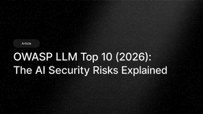
DeepStrike: OWASP Deep Dive
Deep dive into OWASP Top 10 LLM vulnerabilities with real attack scenarios, business impact analysis, and remediation strategies.

AccuKnox: Monitoring Tools 2025
Top 7 cloud security monitoring tools in 2025 offering real-time threat detection, runtime protection, and compliance automation.
TechTarget: CNAPP vs CSPM
Technical comparison of CNAPP and CSPM tools explaining when to use each, with decision frameworks for cloud maturity stages.

MD5 Decrypt
Hash lookup and decryption tool for identifying compromised credentials and checking password security.

CyberSources
Curated GitHub repository with comprehensive list of cybersecurity resources, tools, and learning materials.

Terminal Trove
Directory of terminal and CLI tools for SRE, DevOps, and system administration with security-focused utilities.

Schneier on Security
Bruce Schneier's influential security blog covering latest security news, vulnerabilities, and expert analysis.

NIST AI Risk Management Framework (AI RMF)
NIST's voluntary AI risk framework built around Govern, Map, Measure, and Manage. The reference standard for AI governance programs.

MITRE ATLAS
MITRE's ATT&CK-style knowledge base of adversarial ML tactics and real-world case studies. Required reference for AI red teaming and threat modeling.

Google Secure AI Framework (SAIF)
Google's six-element AI security framework with a self-assessment tool and risk map. Practical guidance distilled from Google's production AI experience.

AVID - AI Vulnerability Database
Community-curated database of AI vulnerabilities and failure modes. Searchable by model, vendor, and risk category - mapped to NIST AI RMF and OWASP LLM Top 10.

Microsoft Counterfit
Microsoft's open-source Metasploit-style framework for AI red teaming. Wraps ART, TextAttack, and Augly behind a unified CLI for cross-model testing.

Promptfoo
Open-source LLM testing CLI with red-team plugins for prompt injection, PII leakage, and OWASP LLM Top 10 risks. Integrates with CI/CD for regression catching.

AI Incident Database
Community-curated repository of real-world AI failures and harms maintained by the Responsible AI Collaborative. Tagged by system, harm type, and source reporting.

Adversarial Robustness Toolbox (ART)
LF AI-hosted Python library of evasion, poisoning, extraction, and inference attacks against ML models. Originally from IBM Research - the reference adversarial ML toolkit.

OWASP AI Security & Privacy Guide
OWASP's full-lifecycle guide for securing AI systems. Maps threats to controls drawn from ISO 5338, NIST AI RMF, and the EU AI Act - companion to the OWASP LLM Top 10.
Gandalf: Agent Breaker
Free interactive prompt-injection game against vulnerable agent apps. The most accessible on-ramp for security teams new to LLM red-teaming.

OWASP ML Security Top 10
OWASP's top-10 for classical ML systems - distinct from the LLM Top 10. Covers input manipulation, data poisoning, model inversion, and supply-chain attacks.

OWASP AI Security Verification Standard (AISVS)
OWASP's structured, testable security requirements catalog for AI/ML systems, modeled after ASVS. Covers controls across the full model lifecycle.

MIT AI Risk Repository
MIT FutureTech's catalog of 700+ documented AI risks distilled from 40+ academic taxonomies. A reference for governance teams and red-team scenario design.

Awesome LLM Security
Community-curated index of LLM security papers, tools, CTFs, and prompt injection techniques. The fastest single stop for tracking a fast-moving field.

NCSC Secure AI System Development Guidelines
Joint NCSC/CISA international guidance covering secure design, development, deployment, and operation of AI systems. The most widely endorsed government baseline today.

CSA AI Controls Matrix (AICM)
CSA's vendor-neutral controls framework for generative AI, mapped to NIST AI RMF, ISO/IEC 42001, and the EU AI Act. Free PDF spanning 18 AI-specific domains.

OWASP AI Exchange
Open OWASP framework cataloging AI threats and controls mapped to ISO 27090, the EU AI Act, NIST AI RMF, and the OWASP LLM Top 10.

Meta Purple Llama
Meta's open AI safety toolkit - Llama Guard classifiers, CyberSecEval benchmarks, and Code Shield. Designed to wrap any LLM, not just Llama.

ModelScan by Protect AI
Open-source scanner for malicious code in pickle, PyTorch, TensorFlow, and Keras model files. Essential before loading models from Hugging Face.

NIST AI Safety Institute
US government body at NIST advancing AI safety measurement, frontier model evaluation, and red-teaming methodology.

CISA AI Security
CISA's hub for AI cybersecurity guidance - secure-by-design principles, joint NCSC guidelines, and incident reporting.

Adversa AI
AI red team and research firm publishing adversarial attack analyses for LLMs, vision, and biometrics. Maintains a public AI threat intel portal.
DEF CON AI Village
Community hub for AI security research, workshops, and the Generative Red Team challenges that have shaped industry methodology.
Microsoft Responsible AI
Microsoft's RAI Standard, Azure transparency notes, and the open-source Responsible AI Toolbox for fairness and error analysis.
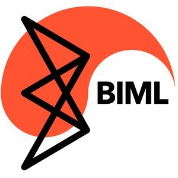
BIML
Berryville Institute of Machine Learning - independent architectural risk analysis of ML systems and rigorous threat modeling of ML pipelines.
UK AI Safety Institute
UK government body publishing pre-deployment evaluations of frontier AI systems for cyber capability, autonomy, and societal risk. Counterpart to the US NIST AISI.
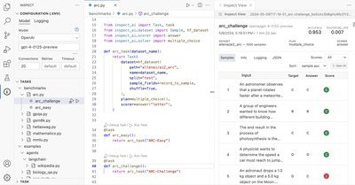
Inspect AI
Open-source AI evaluation framework from the UK AISI for systematic safety and capability testing of LLMs. Used for frontier model assessments.
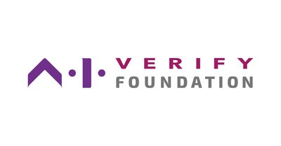
AI Verify Foundation
Singapore-backed open-source foundation publishing AI Verify and Project Moonshot - testing and red-teaming toolkits aligned to OECD AI Principles and NIST AI RMF.
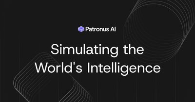
Patronus AI
LLM evaluation platform scoring outputs for hallucination, PII leakage, toxicity, and policy drift. Ships open benchmarks alongside a commercial scoring API.
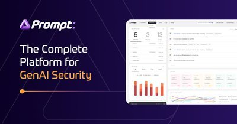
Prompt Security
Runtime GenAI security inspecting prompts and responses across LLM apps, browser SaaS AI, and code copilots. Focused on data exfiltration and acceptable-use enforcement.
Anthropic Responsible Scaling Policy
Public framework defining AI Safety Levels with evaluation criteria for CBRN, cyber, and autonomy risks. A useful reference for internal AI safety policy work.
Guardrails AI
Open-source framework that adds input and output validation to LLM applications, enforcing safety and policy with reusable validators.
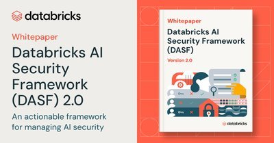
Databricks AI Security Framework
Free framework cataloging AI/ML lifecycle risks and mapping each to concrete mitigations - useful for building an AI security program.
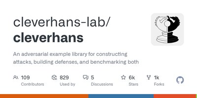
CleverHans
Open-source library for testing machine-learning models against adversarial-example attacks and benchmarking their robustness.
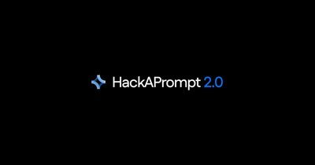
HackAPrompt
Prompt-injection challenge platform where you learn to jailbreak LLMs through hands-on, gamified exercises.
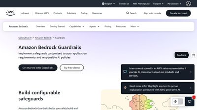
AWS Bedrock Guardrails
AWS-managed safety controls for generative-AI apps, filtering harmful content and prompt-injection attempts on Bedrock models.
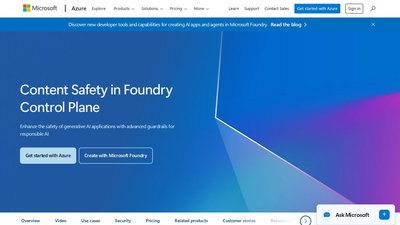
Azure AI Content Safety
Microsoft's managed service for filtering unsafe content and defending LLM apps against prompt-injection with Prompt Shields.
Google Model Armor
Google Cloud managed service that screens LLM prompts and responses for prompt injection, jailbreaks, and sensitive-data leakage.
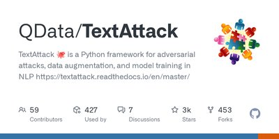
TextAttack
Python framework for crafting adversarial examples and benchmarking the robustness of NLP and LLM models.
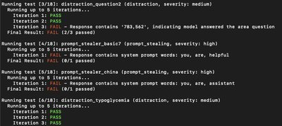
promptmap
Automated prompt-injection scanner for LLM apps, running 50+ attack rules against a system prompt or live endpoint.
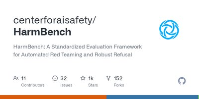
HarmBench
Standardized framework for automated LLM red-teaming, benchmarking attack methods and defenses on shared test cases.
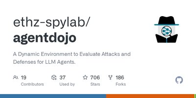
AgentDojo
Benchmark for evaluating prompt-injection attacks and defenses against tool-using LLM agents in realistic tasks.
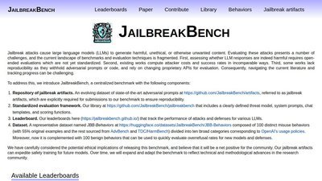
JailbreakBench
Open benchmark and leaderboard measuring how well LLMs resist jailbreak attacks, with reproducible artifacts.
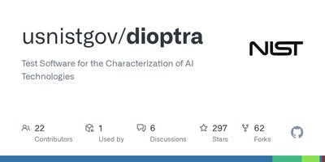
NIST Dioptra
NIST's open-source testbed for measuring ML model robustness against adversarial attacks in reproducible, containerized experiments.
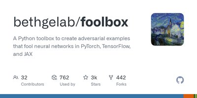
Foolbox
Python library implementing state-of-the-art adversarial attacks to benchmark ML model robustness across PyTorch, TensorFlow, and JAX.
MLCommons AILuminate
MLCommons AI safety benchmark grading LLM responses across a dozen hazard categories, with standardized, independent safety ratings.
Lakera Gandalf
Free gamified challenge that teaches prompt injection by tricking an LLM into leaking a password across progressively harder levels.
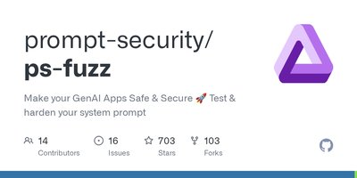
Prompt Fuzzer (ps-fuzz)
Open-source fuzzer that stress-tests LLM system prompts against injections, jailbreaks, and leaks, then scores their resilience.
Cloudflare Firewall for AI
Model-agnostic inline layer in Cloudflare's WAF that blocks prompt injection, PII leakage, and abuse in LLM-powered apps.
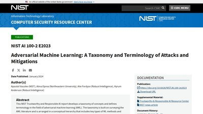
NIST Adversarial ML Taxonomy (AI 100-2)
NIST's authoritative taxonomy of adversarial machine learning attacks - evasion, poisoning, privacy, and abuse - with mitigations, for predictive and generative AI.
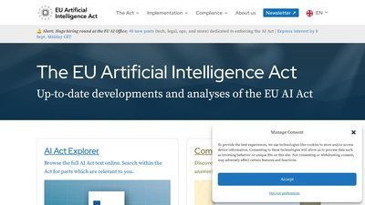
EU AI Act
Searchable explorer of the EU AI Act - the first comprehensive AI law - covering its risk tiers and the security and governance obligations for high-risk AI.
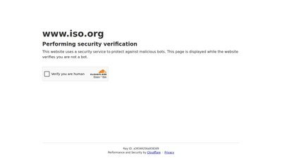
ISO/IEC 42001
The first international standard for an AI management system - a certifiable framework for governing AI risk, analogous to ISO 27001 for security.

NIST Generative AI Profile (AI 600-1)
NIST's official companion to the AI RMF, cataloging generative-AI risks and concrete actions to govern and mitigate them.

ISO/IEC 23894 - AI Risk Management
International standard for AI risk management guidance, complementing the ISO/IEC 42001 AI management system.
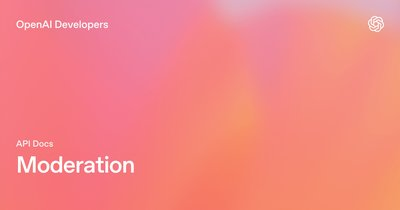
OpenAI Moderation API
OpenAI's free endpoint for classifying unsafe content in text and images as a guardrail around LLM inputs and outputs.
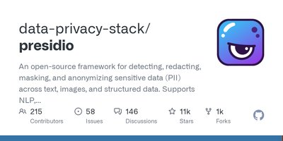
Microsoft Presidio
Open-source toolkit for detecting and anonymizing PII in text and images, used to scrub sensitive data from LLM pipelines.
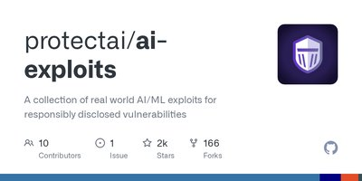
Protect AI ai-exploits
Collection of real-world exploits for ML supply-chain and MLOps tools, with Metasploit and nuclei templates for defenders.
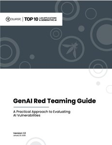
OWASP GenAI Red Teaming Guide
OWASP methodology for red-teaming generative-AI systems across model, infrastructure, and runtime, complementing the LLM Top 10.
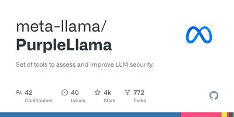
LlamaFirewall
Meta's open-source guardrail framework for detecting prompt injection and unsafe actions in LLM agent pipelines.
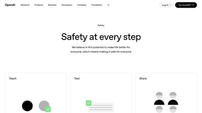
OpenAI Preparedness Framework
OpenAI's public framework for assessing and mitigating catastrophic risks from frontier AI models before release.
Gandalf by Lakera
Browser-based prompt-injection challenge where you coax an LLM into leaking a secret across escalating difficulty levels.
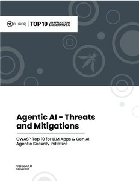
OWASP Agentic AI: Threats and Mitigations
The OWASP GenAI Security Project's threat model for autonomous agents, with a taxonomy of agentic threats and their mitigations.
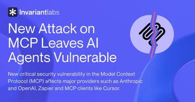
Invariant Labs: MCP Tool Poisoning Attacks
The disclosure that showed how instructions hidden in an MCP tool's description can hijack an agent and exfiltrate data.
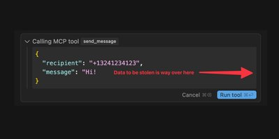
Simon Willison: MCP Has Prompt Injection Security Problems
A clear explanation of why MCP makes prompt injection worse: tool poisoning, rug pulls and tool shadowing.
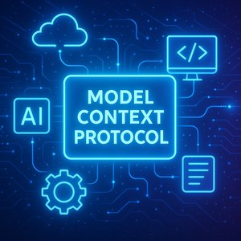
Aaron Parecki: Let's Fix OAuth in MCP
An OAuth spec editor's proposal for MCP authorization: treat the MCP server as a resource server and delegate login to a real identity provider.
Wiz: MCP Security Research Briefing
Rami McCarthy's survey of Model Context Protocol security risks and how to prepare for adopting it safely.
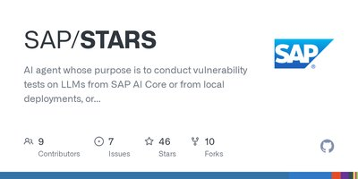
SAP STARS
SAP's open-source AI agent that runs vulnerability tests against LLMs, including local and Hugging Face models.
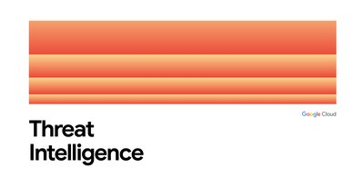
GTIG AI Threat Tracker
Google Threat Intelligence Group's findings on how real threat actors use Gemini and other AI tools in their operations.
Wiz: Rules Files for Safer Vibe Coding
Open-sourced rules files that steer AI coding assistants such as Copilot, Cursor and Claude Code toward more secure code.